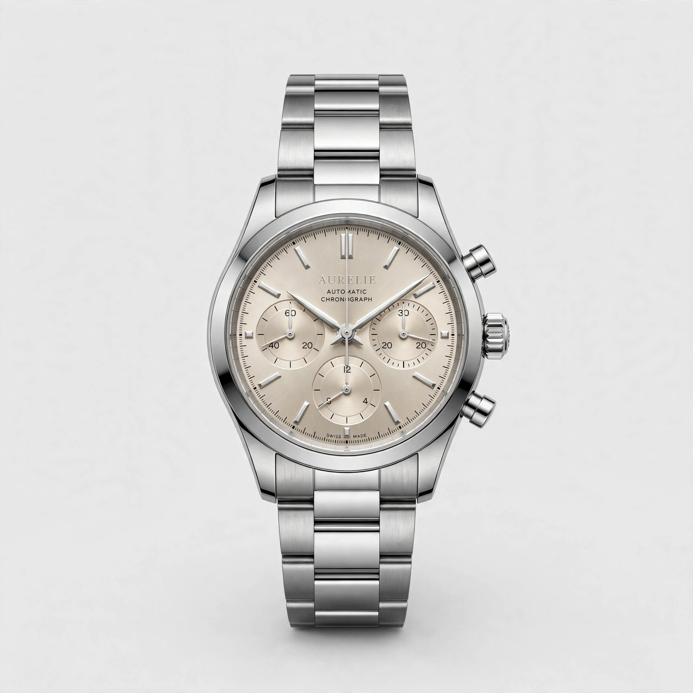
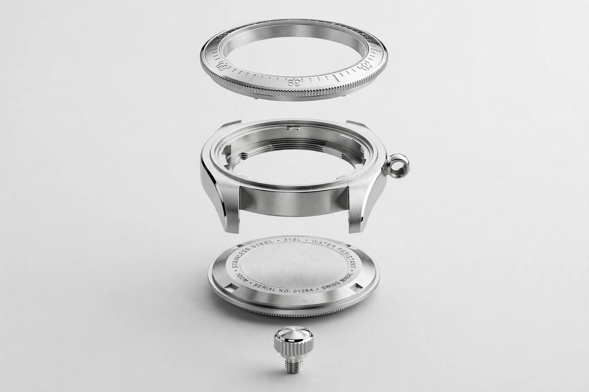
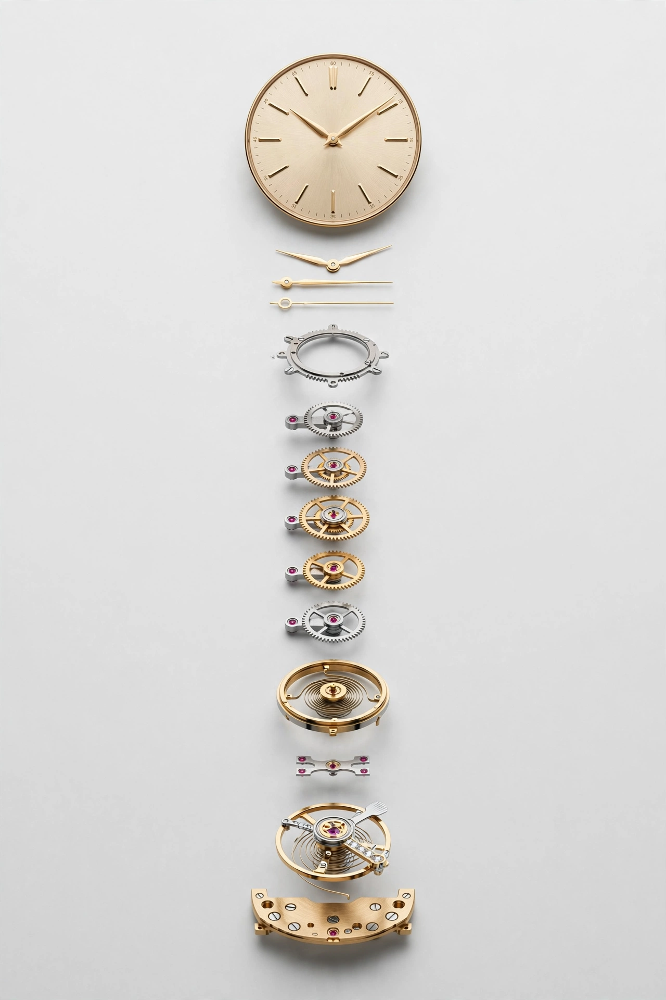
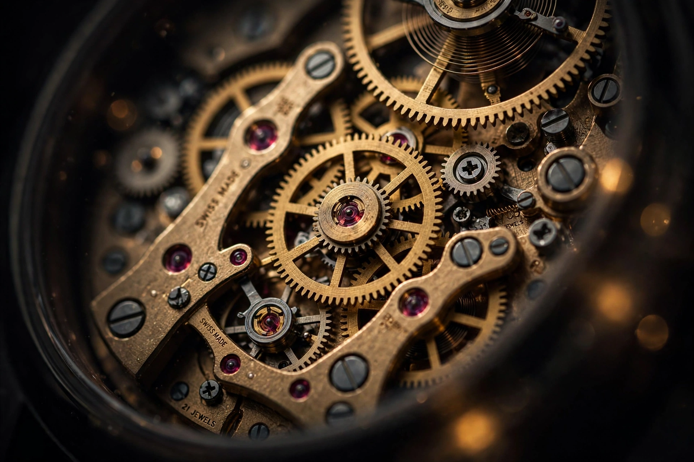
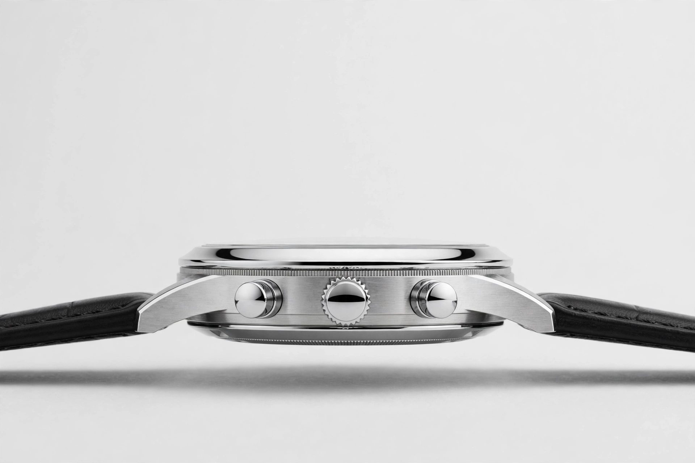
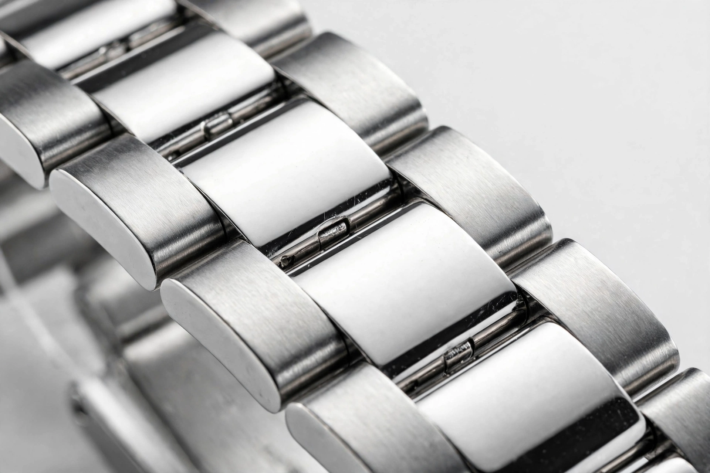

Automatic Chronograph

MODEL 146GR
Silver · Champagne dial · 40 mm
Timeless
One revolution.
One story.
Anatomy


Four layers. Zero compromise.
Mechanical Heart

217 components. 28,800 vibrations per hour. A 72‑hour power reserve — hand‑finished, quietly beating beneath the dial.
Elegant Contours
Sculpted lugs flow into the bracelet. Nothing sharp, nothing loud — only lines that belong on a wrist.
Slim Profile

The slimmest automatic chronograph in its class. It slides under a cuff like it was never there.

The Collection
MODEL 146GR · Steel Silver